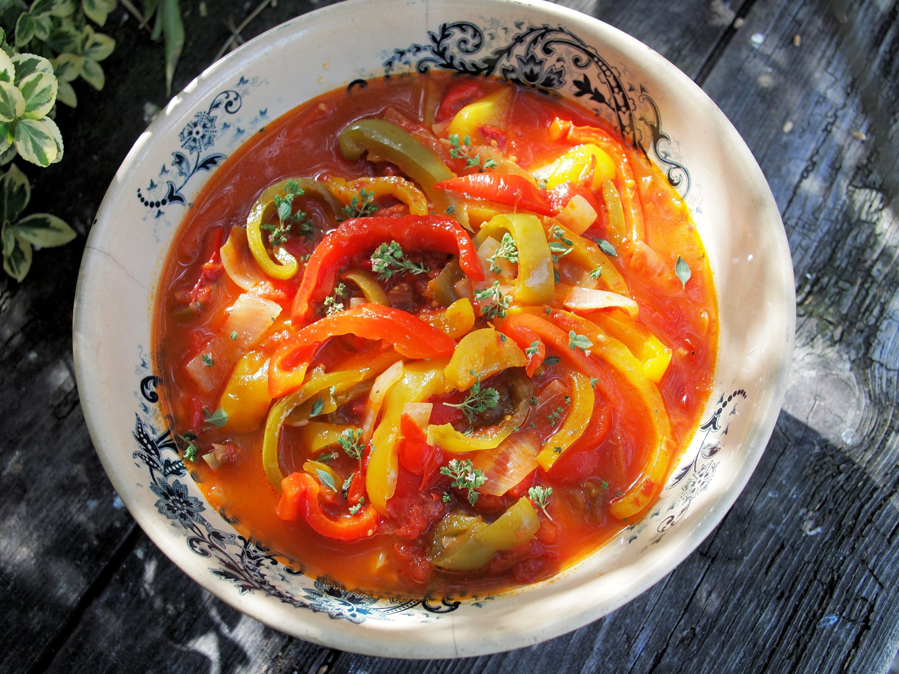

PEPERONATA

| difficoltà |
costo |
tempo |
| bassa |
basso |
15 minuti |
INGREDIENTI PER LA PEPERONATA
- peperoni 1 kg
- passata di pomodoro 400 g
- aglio 2 spicchi
- pepe nero
- cipolle rosse di tropea 400 g
- olio 40 g
- sale fino
PREPARAZIONE PEPERONATA
- lavare i peperoni e le cipolle
- tagliare i peperoni lungo il torso e in filamenti
- tagliare le cipolle
- in un tegame mettere uno spicco d'olio e i due spicchi d'aglio
- inserire le cipolle nella pentola cuocendole a fuoco medio-basso per 15 minuti mescolando qualche volta
- inserire mi peperoni quando le cipolle si sono ammorbidite e hanno rilasciato l'acuqa
- aggiungere sale e pepe
- mescolare e coprire con un coperchio
- far cuocere i peperoni per 15 minuti a fuoco medio-basso
- togliere gli spicchi d'aglio
- versare la passata di pomodoro
- mescolare il tutto
- lasciar cuocere tutto per altri 15 minuti
ti sono piaciute le informazioni?
si
no
per niente
acconsenti di utilizzare i seguenti dati?
per vedere di più